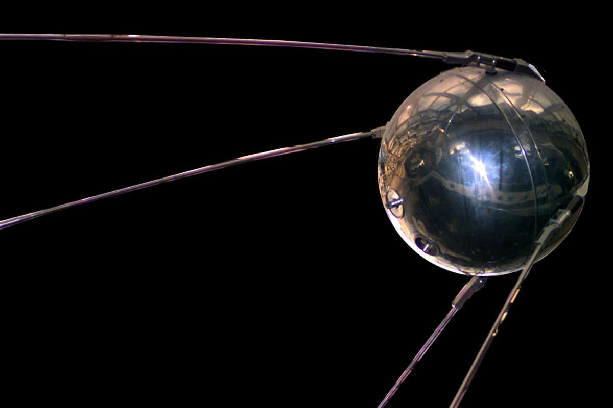

1957
The USSR launched Sputnik into space which led to the USA creating the Defence Advanced Research ct Agency, they worked on becoming the leading nation in new science and technological discoveries.
1961
Leonard Kleinrock at MIT wrote a paper called “ information flow in large communication Nets” which communicated his theories and concepts for packet switching the technology underpinning Internet Connections.
1965
The first wide area computer network was created, TX-2, he communicated from a Massachusetts computer to another computer based in California using a relatively low speed dial up telephone line.
1969
The ARPAnet is born by linking Four nodes, the University of California at Los Angeles Stanford research institution and the University of California at Sarda Barbara and the University of Utah worked together, and the network was wired together via 50kbps circuits. The first message sent across the network was supposed to have been “Login” but crashed when the letter “G” was typed in.
1977
The development of the first PC modem by Dennis Hayes and Dale Heatherington was introduced and initially sold to computer hobbyists.
1982
Scott Fareham invent the first emoticon and kick starts the Internet Society trend by suggesting the use of the emoticon to convey emotion to other users, the term Internet were also preferred instead of ARPAnet.
1984
The Domain name system were introduced; the user could type in easy to remember domain names and it converted it to the IP: address automatically .
1989
AOL is launched and WWW proposal
1991
The first web page was created, and its purpose was to explain what the world wide web was.
1995
eBay and Amazon were created, and the first online shopping trend began.
1998
Google were launched and revolutionise the way people searched and received information.